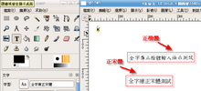

COSA活動記錄簿
留下COSA所辦活動之紀錄
首頁
相簿目錄
::
最新上傳
::
最新留言
::
熱門圖片
::
最高評分
相簿首頁
>
網站發佈相關圖檔
>
AP_GIMP
AP_GIMP
標題
+
-
檔名
+
-
日期
+
-
位置
+
-
95 次觀看
117 次觀看
101 次觀看
96 次觀看
106 次觀看
86 次觀看
113 次觀看
116 次觀看
113 次觀看

102 次觀看
99 次觀看
99 次觀看
12 張圖片，共 1 頁